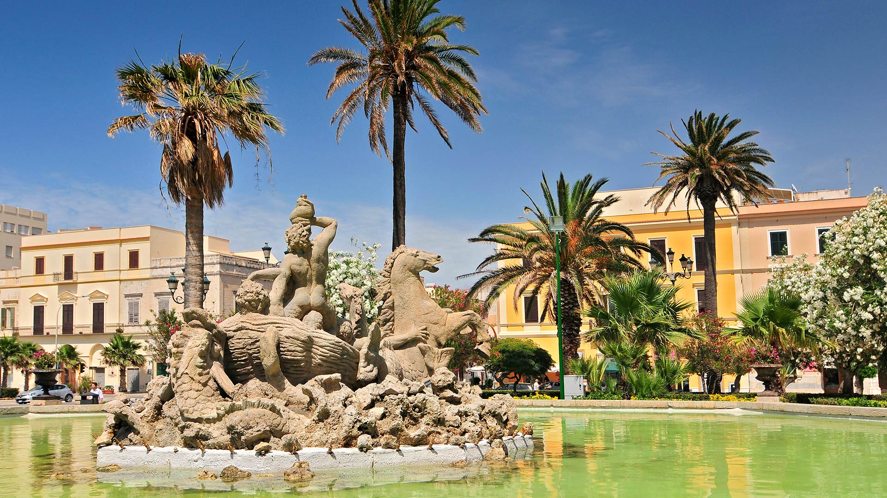

FONTANA DEL TRITONE
Il simbolo monumentale della piazza
Realizzata nel 1890 in marmo e bronzo, questa imponente fontana si erge al centro della piazza. L'opera raffigura il mitologico Tritone al centro di una vasca circolare, simbolo del profondo e indissolubile legame della città di Trapani con il mare e le sue antiche tradizioni marinaresche.